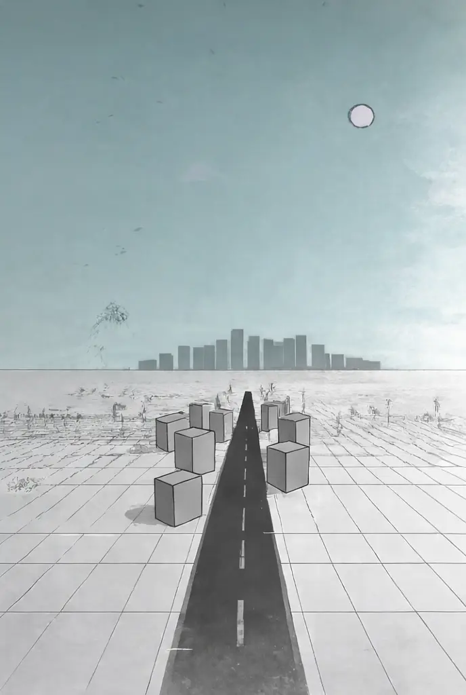
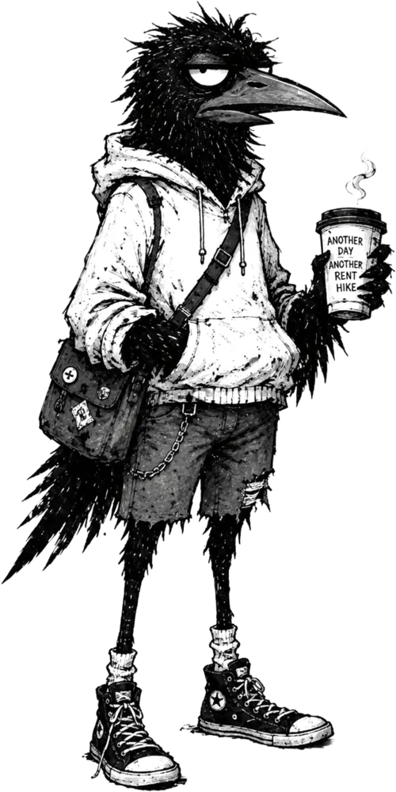
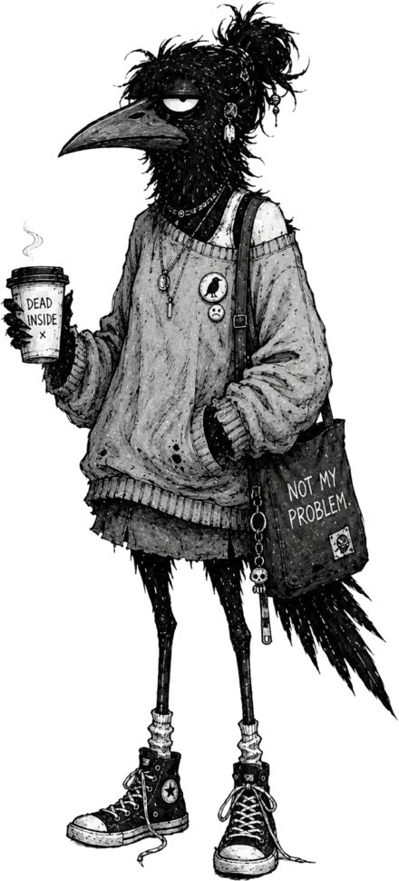
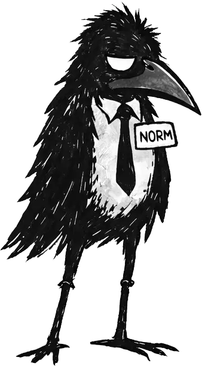

The proposition
It collects itself.
Rent fills a bar. You tap the bar. Money appears. You will be told this is a game, and it is, in the sense that you will do it for six hours and call it relaxing.
Every figure on this page is climbing while you read it. That is not a bug in the website. That is the product.
try clicking literally anything. we mean it. — m.

Hey there! Welcome to the property business.
Features
Everything Goes Up
An idle empire in three taps. The line goes up while you play, while you don’t play, and — thanks to our team of professionals — while you specifically promise yourself you’ll stop playing.
Tap. Collect. Repeat.
Rent fills a bar. You tap the bar. Money appears. Ten buildings, from a $50 Rundown Duplex to the $1,000,000,000 Titan Spire.
Idle loopHire managers. They handle everything.
Auto-collect even when you’re away. Offline earnings at 50%. You literally cannot stop earning. We checked.
Passive incomeThree upgrade tracks.
Amenities, Structure, Marketing — ten levels each. Global upgrades stack all profits from ×3 to ×77. “Board game sold separately.”
Number engineNumbers past pronunciation.
K, M, B, T, Qa, Qi, Sx, Sp, Oc, No, Dc… then the game politely switches to $1.23e36 and keeps going.
$1.23e36great energy so far, team. keep it exactly like this. — m.
Portfolio
The Residences
Ten addresses along one hand-inked highway, presented in ascending order of price. Each has been rendered by our architects in pencil, at considerable expense, and is available to anyone. Anyone with money.
You may notice the palette maturing as the prices ascend. Our colorists call this patina. It is not dirt.
Specifications
The Particulars
Every figure below is accurate. We checked, reluctantly.
- The portfolio
- Ten residences, ascending from $50 to $1,000,000,000.
- Improvements
- Three upgrade tracks — Amenities, Structure, Marketing — ten levels each.
- Staff
- Managers collect rent even when you’re away.
- Overnight service
- Offline earnings accrue at 50%. The buildings do not sleep; you may.
- Growth
- Global upgrades stack all profits from ×3 to ×77. “On a finite planet. Somehow.”
- Construction
- Hand-inked wireframe. Two-point perspective, 2px lines, no 3D engine.
- Climate
- 75-second days. Automatic rain with lightning; pedestrians shelter inside your buildings.
- Music
- Sixteen tracks in day and night editions, from Humble beginnings to Peak capitalism (ominous).
- Arithmetic
- K, M, B, T, Qa, Qi, Sx, Sp, Oc, No, Dc… then scientific notation.
- Recreation
- Press R. We won’t explain.
Appointments
Amenities & Appointments
Every residence is appointed to the very highest standard we were prepared to pay for.
- ‘Award-winning.’ We made the award.
- Wellness room. Crying closet with branding.
- ‘Open concept.’ We removed a closet.
- Gray paint everywhere. It’s called ‘greige’ now.
- Concierge service. Also the maintenance guy.
- ‘Resort-style living.’ Resort not included.
- Fitness center. One treadmill. Broken.
- ‘Gated community.’ Gate works sometimes.
- ‘Penthouse collection.’ Top 4 floors. All penthouses.
- New toilet seat. The luxury of sitting.
- ‘Boutique living.’ It’s 12 units.
- Virtual tour hides the smell.
Personnel
Meet our Property Managers
Rent collects itself — even when you’re away. These professionals see to that. They have been with Line City Properties for some time and have stopped asking questions, which we value.
Hover any member of staff. They will tell you something. We have asked them not to.
Residents
And the people who live there.
Every residence comes with residents. This is, we are told, unavoidable. They have been informed of the new rate and have taken the news in a spirit of…
Look — they’re fine. They have coffee. They have somewhere to be. One of them has a tote bag that we have been asked not to photograph.
They are not, technically, a feature. We just thought you should see them before you buy the building.
do we have to include this section. asking sincerely. — m.


Enquiries
Join the waiting list.
Artificial scarcity, included.
Your email will be used to notify you, and to feel exclusive.
Placement secured.
You’re on the waiting list. The wait itself is complimentary. We’ll write the moment RENT RAISER has a door to open.

“Congratulations, I guess. You won. Whatever this is.”